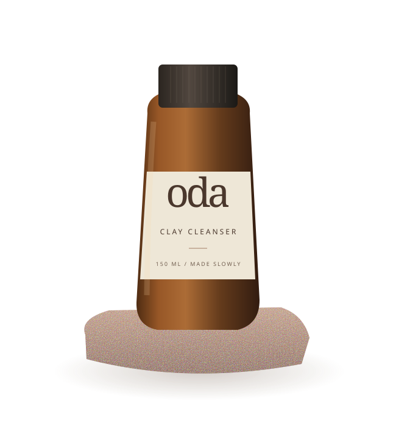

Pink kaolin
From Brittany.
The gentlest clay there is. It absorbs excess oil without drawing moisture out of the skin.
Clay · Oat · Cold-pressed oils
Five products. No fragrance, no fillers, no twelve-step routine. Made in small batches in the Peak District.
Shop the five ↗GOOD SKIN DAYS. A LITTLE LESS STUFF.

THE EVERYDAY ESSENTIAL / 150 MLEverything you need.
Room on the shelf to spare.
A pink clay gel that lifts the day without stripping.
150ml / £22 ↗Calms redness and preps skin in one step.
150ml / £19 ↗Niacinamide and squalane, light enough for mornings.
30ml / £34 ↗A rich, unscented moisturiser for dry and reactive skin.
50ml / £29 ↗Rosehip and camellia, pressed cold, used sparingly.
30ml / £31 ↗From the earth, thoughtfully
From Brittany.
The gentlest clay there is. It absorbs excess oil without drawing moisture out of the skin.
From Scottish farms.
Soothes itching and redness, and forms a light protective film that helps skin hold water.
From olives.
Mimics the oils skin makes itself, so it sinks in without residue.
From Chile, cold-pressed.
Rich in vitamin A and fatty acids. Brightens slowly, the honest way.
Before you buy
Cleanse and tone morning and night. Serum in the morning, oil at night, cream whenever skin feels tight.
Formulated for sensitive, dry and combination skin. Patch test first if you react easily.
Fragrance, essential oils, alcohol, sulphates, silicones and parabens.
From people who use it · sample reviews
★★★★★“The first cleanser that doesn't leave my rosacea angry. I've finished three bottles.”
Hannah, sensitive skin
★★★★★“I replaced a shelf of products with four of these. My bathroom looks better too.”
Jamal, combination skin
★★★★★“The barrier cream got me through a Yorkshire winter. Nothing else has.”
Priya, dry skin
Brand concept copy, not verified customer or clinical evidence.
Routine
A simple routine is easier to keep. Start with a gentle cleanse and add only what your skin needs. This is general brand editorial, not medical advice.
Ingredients
Kaolin is a fine mineral clay. In our concept range, it plays a supporting role in cleansing. Ingredient claims vary by formulation; patch test and seek qualified advice for persistent irritation.